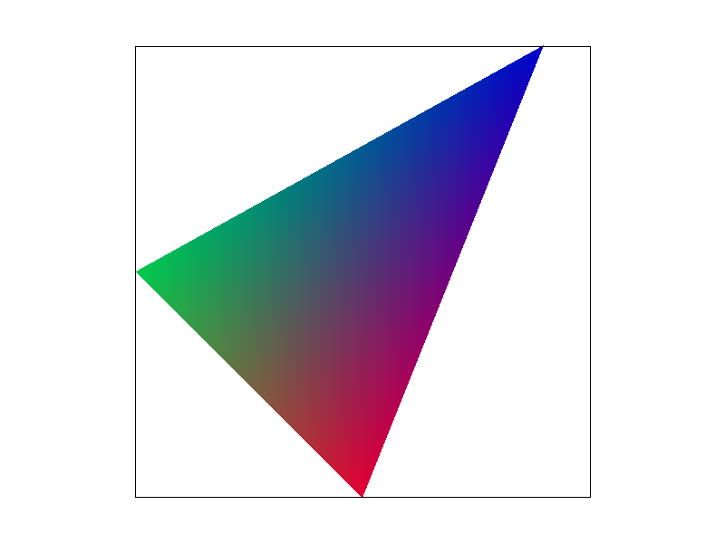

|
Tianzhe Chu
|

|
Interpretation The first task is to implementation a function to draw signle-color triangles. The given triangle is defined by three vertices, and the color is defined by the RGB value. To draw the triangle, I first calculate the bounding box of the triangle, and then iterate through all the pixels in the bounding box, where true pixels should be in the center of 4 pairs of indices, i.e. (x+0.5, y+0.5). The key point of this task is to determine whether a pixel is inside the triangle. I use the cross product to achieve this goal, i.e. to determine if P is inside triangle ABC, I will check the cross product of (AB, AP), (BC, BP), (CA, CP). If the three products have the same sign(all non-negative or non-positive), then P is inside the triangle. No worse?My implementation do the same thing as "checking each sample within the bounding box of the triangle" except some optimizations which will be discussed later. So my implementation is no worse than the given one. Extra CreditTo improve the performance, I use loop reordering and multi-thread via OpenMP to speed up the function. Since the memory of the sample matrix is organized in row-major order, I reorder the loop to make the memory access more continuous for more cache hits. Also, I use OpenMP to parallelize the loop, which can speed up the function. |
||||
|
|
|||||
|
|
Interpretation The key idea of supersampling is to sample more than one location within each pixel, and then calculate the average samples as the true color of that pixel. Supsersampling is useful in antialiasing because it works as a convolution filter within one pixel and smooths the edges of the triangle. Hence, in the signal processing view, frequencies higher than Nyquist frequency would be filtered out. PipelineMy implementation includes the following steps: 1. Resizing the sample buffer: Insdead of (width times height), I resize it to (width times height times sample_rate) in all related functions to store supersampled data. 2. Modifying the rasterizing function in task 1: I add two more inner loops, each with length \(\sqrt{\text{sampling rate}} \). These two loops traverse through the supersampled pixes within a pixel by accessing the index: \( x = i + (ii + 0.5)/\sqrt{\text{sampling rate}} \) \( y = j + (jj + 0.5)/\sqrt{\text{sampling rate}} \) ,where i, j are outer loops, ii, jj are inner loops.
3. Modifying the
4. Modifying the
The following images are results of
|
||||
|
|
Interpretation
The left picture is my cubeman with a waving hand posture in a lazy style.
I rotate the head by 15 degrees, left arm by 15 and 90 repectively(2 parts), right arm by 90, bottom right leg by 25.
I also apply a fancy pink color on it, plus lengthening the torso. Since rotation is applied on the center of each shape,
I change the location of some shapes by |
||||
|

|
Interpretation Barycentric coordinates is a special coordinate system that is commonly used in triangle rasterization, i.e. deciding if a point is inside the triangle, evaluating the color of the point, etc. The idea is to represent any point in the triangle plane by a linear combination of the three vertices of the triangle. These three coefficients are called barycentric coordinates, which are calculated by the propotion of areas, i.e. \(\alpha = S(BPC)/S(ABC)\), similarly for the other two. Remember that the area can be negative if P is outside the triangle. The below function \(V(\cdot)\) can be either location or color value. \(V(P) = \alpha V(A) + \beta V(B) + \gamma V(C)\) \(\alpha + \beta + \gamma = 1 \) |
||||

basic/test7.svg |
|||||
|
|
Interpretation of Pixel Sampling Pixel sampling is a method to map a texture to a surface, mathematically speaking, mapping a dixcrete vertex from one coordinate system to another. Nearest sampling is a naive method, which simply maps the nearest vertex on the texture to the surface. Bilinear sampling is a more sophisticated method, which maps the four nearest vertices on the texture to the surface and calculates the color by linear interpolation. Implementation
In implementation, the input becomes two sets of vertices, one
representing the triangle on the surface, the other representing the target
triangle on the texture. The key point is to calculate
the barycentric coordinates of the mapped triangle, and use them to calculate
the target vertex on the texture.
The target texure color is given by the inner function As is shown in the following figures, expecilly for the case of small sample rate, bilinear sampling is much better than Nearest sampling since it generate smoother edges for delicate patterns in the center of Berkeley's emblem, hence allowing the details to be seen clearly. For larger sampling rate, despite supersampling's antialiasing effect, bilinear sampling still generates less jaggy patterns expecially for lines and gradients of colors. Comments on differences1. Computational cost: Bilinear sampling is more computationally expensive than Nearest sampling. Hence, nearest sampling might be a better choice for heavy computation tasks such as real time rendering. 2. Information loss: When mapping a texture with higher density to a surface with higher sparsity, bilinear sampling might lose some information of sharpness while nearest sampling might not. 3. Effect of super sampling: When doing supersampling and bilinear sampling together, we are, kind of , doing a two-level convolution, which would result in a more blury image. This phenomenon is also observed in the figures below, though not that obvious. For nearest sampling, supersampling obviously works. 4. Large differences happen: Large differences of these two methods happens on cases with samller sample rate. This is because supersampling has similar "blurring" effect as bilinear sampling, without which there would be a better contrast between the two methods.
|
||||
|
|
Interpretation The idea of level sampling is to downsample the texture to a lower resolution without aliasing, which is achieved by selecting a typical downsampled texture level. This goal can be achieved by mipmap, which is a set of downsampled textures with different(usually power of 2) resolutions. The pre-processed mipmap levels would be used for the closest needed resolution, thus it's effective in antialiasing. Implementation
The key components of level sampling is in the inner function Since we are processing discrete vertices, the gradients are approximated by the target vertex and its (vertical and horizontal) neighbours. Tradeoffs1. Speed: Supersampling with large sample rate is most time-consuming since it requires multiple samples for each pixel. Level sampling requires computation of gradients, which is equivalent to super sampling with samplerate=4. Bilinear sampling takes similar time as level sampling since it also requires color of 2 more neighbouring pixels. Nearest sampling is the fastest since it only requires color of the target pixel. 2. Memory usage: Supersampling with large sample rate takes the most memory since it requires a memory line of size height * width * samplerate. Level mapping requires 1/3 more memory than vanilla memory storage of same resolution. (\(\sum_{i = 0}^{\infty}\frac{1}{4^i}=\frac43\)) Pixel sampling methods don't require extra storage memory but bilinearing mapping requires 2 more temporary variables for storing color of 2 neighbouring pixels than nearest sampling. 3. Antialiasing power: Supersampling with large samplerate does best in antialiasing since it has the least information loss within each pixel. It's hard to compare level sampling and bilinear sampling. It might depend on the quality of the downsampled mipmap levels, if it's perfect, then level mapping does better otherwise bilinear sampling better. Results
The below figures is the texture mapping result of the coast scene in Hawaii with
Bilinear sampling is implemented by using the lerp of the target level and its nearest level by the following code:
Since it's an additional blurring filter, it's expected to add extra rendering time but a
little bit better antialiasing quality as is shown below:
|


{kind=link}